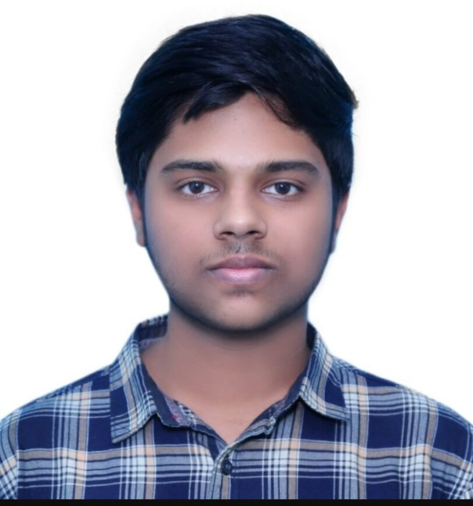

Sathvik Pasuvula

Summary
I'm a hardworking individual and an Open Source enthusiast.
Bagh Amberpet
Hyderabad, 500013
Telangana, India.
(+91) 9121132653
sathvikpworks@gmail.com
Linkedin
GitHub
Education
- Bachelor of Technology (CSE) - Amrita Vishwa Vidyapeetham. (2023-present)
- Primary Education - Delhi Public School, Nacharam. (2010-2020)
Work Experience
- ACM-ASC, Amritapuri - Research Intern
Skills
- Programming: Python, Java, C
- Front-end: Html, CssBootstrap, Tailwind Css, JavaScript, React
- Development Tools: Git, GitHub, Firebase
- Miscellaneous: Contrivance, Critical thinking, Documenting, Technical
Acievements
-
Wikimedia Hackathon - Kochi, 2024